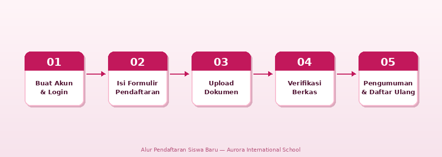

Alur Pendaftaran Siswa Baru
Berikut adalah langkah-langkah yang harus dilakukan oleh calon peserta didik untuk mengikuti seleksi penerimaan siswa baru Aurora International School.

- Buat Akun & Login — Kunjungi portal PPDB dan daftarkan akun menggunakan email aktif. Verifikasi akun melalui tautan yang dikirim ke email.
- Isi Formulir Pendaftaran — Lengkapi data diri pada halaman Isi Formulir, termasuk Nama Lengkap, NIK (16 digit), dan jalur pendaftaran yang sesuai.
- Unggah Dokumen Persyaratan — Upload Kartu Keluarga, Akta Kelahiran, Rapor terakhir, dan sertifikat prestasi (khusus jalur Prestasi).
- Verifikasi Berkas oleh Panitia — Panitia akan meninjau seluruh berkas dalam kurun waktu 10 hari kerja sejak penutupan pendaftaran.
- Pengumuman Hasil Seleksi — Hasil diumumkan 05 Juni 2026. Cek status pendaftaran melalui portal menggunakan NIK yang didaftarkan.
- Daftar Ulang — Peserta yang diterima wajib daftar ulang pada 06–10 Juni 2026 dengan membawa dokumen asli.